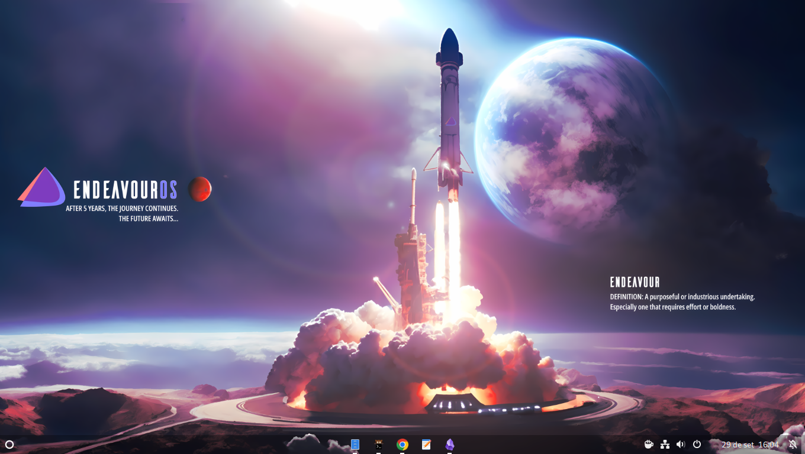
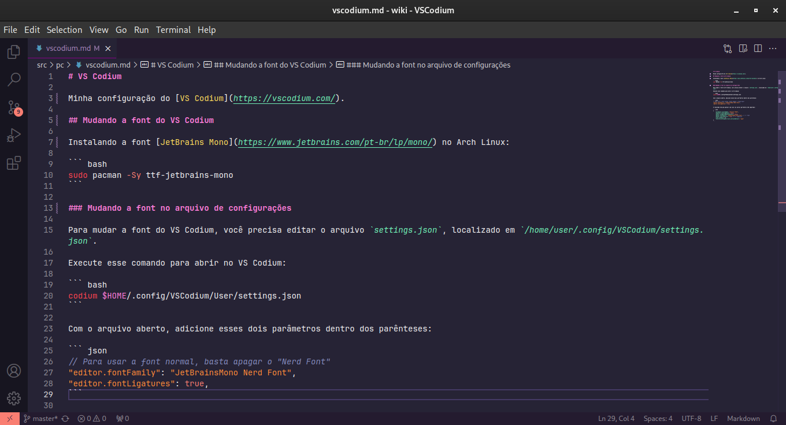

Bem-vindo!
Aqui anotarei coisas que acho importante.
Site • Github • Todos o links
Gnome

Minha configuração do Gnome com Wayland. Atualmente usando no EndeavourOS (base Arch Linux).
Extensões
- Alphabetical App Grid: Deixa o menu de aplicativos em ordem alfabética;
- Arch Linux Updates Indicator;
- Caffeine: Desabilita a proteção de tela e a suspensão automática;
- Clipboard Indicator: Gerenciador de área de transferência;
- Dash to Dock: Deixa a dock parecida com a do Windows, além de remover a barra superior e mover seus itens para a dock;
- Emoji Copy: Menu de emojis parecido com a do Windows 10;
- Tray Icons: Reloaded: Mostra os ícones de bandeja igual ao Windows;
- User Themes: Tema do shell personalizado.
Keybinds
Super+a: Abre as notificações;Super+v: Abre o clipboard;Super+.: Abre o seletor de emojis;Super+Tab: Mostra o panorama;Super+Enter: abre o terminal;Super+F11: Tela cheia;Alt+Tab: Altera entre aplicativos.
Aparência
- Tema e ícones: Adwaita;
- Wallpaper: Clique para baixar;
- Cursor: macOS Cursor;
- Icone do menu: Circle do Icons8.
{kind=link}
Flatpak
Configurando tema
Mudar o tema dos programas Flatpak:
sudo flatpak override --env=GTK_THEME=Adwaita-dark
Corrigir o erro dos programas Flatpak com o cursor maior que o resto do sistema:
flatpak --user override --filesystem=/home/$USER/.icons/:ro
flatpak --user override --filesystem=/usr/share/icons/:ro
Configurando Google Chrome Apps
Fechar o Google Chrome totalmente:
killall chrome
Dar permissão para o Chrome acessar as pastas icons e applications:
flatpak override --user --filesystem=~/.local/share/applications:create --filesystem=~/.local/share/icons:create com.google.Chrome
VS Codium
Minha configuração do VS Codium.
Mudando a font do VS Codium
Instalando a font JetBrains Mono no Arch Linux:
sudo pacman -Sy ttf-jetbrains-mono
Mudando a font no arquivo de configurações
Para mudar a font do VS Codium, você precisa editar o arquivo settings.json, localizado em /home/user/.config/VSCodium/settings.json.
Execute esse comando para abrir no VS Codium:
codium $HOME/.config/VSCodium/User/settings.json
Com o arquivo aberto, adicione esses dois parâmetros dentro dos parênteses:
// Para usar a font normal, basta apagar o "Nerd Font"
"editor.fontFamily": "JetBrainsMono Nerd Font",
"editor.fontLigatures": true,
O resultado tem que parecer com isso (os outros parâmetros não importam):
{
"workbench.colorTheme": "Dracula Theme",
"explorer.confirmDelete": false,
"editor.largeFileOptimizations": false,
"editor.fontFamily": "JetBrainsMono Nerd Font", // <-- font
"editor.fontLigatures": true, // <-- ligatures
"json.schemas": [],
"security.workspace.trust.untrustedFiles": "open"
}
Resultado
